Saturday, December 14th - Cork Bowl 12 was supposed to be one of the best ever played, but when the game ended the Hartebeests had cruised to a 133-72 win and the Meerkats were without their top receiver as Patrick Cork was hurt early in the 1st quarter. "It's kind of an empty victory," responded Hartebeest quarterback Willy Truitt. "Without Patrick out there for much of the game, it just didn't seem like Cork Bowl." After 6 consecutive years of close games (all decided by 16 points or less), this game mirrored Cork Bowl 5 which was played in a snowstorm and finished 130-77. On a beautiful day with temperatures reaching into the low 40's, the
game had a great turno 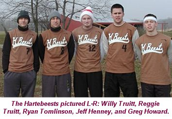 Meerkat quarterback Tony Cork trotted onto the field for the first time
since Cork Bowl 8 looking to lead his team to the first score of the game.
Cork's first pass was complete to Patrick on the sideline for 8 yards, but
his second down pass was incomplete setting up a big 3rd and 8 play. Tony
was rushed by Ryan Tomlinson and he scrambled away from pressure before
finding an open Josh Williamson across the field for a big gain deep inside
Hartebeest territory, however, Cork was about four yards past the line of
scrimmage when the ball was thrown and the play was brought back on the
penalty. On the subsequent 4th down play, Cork's pass sailed over the head
of Patrick and the Meerkats turned the ball over on downs deep inside their
own territory. "The play that was called back really had an impact
early," re 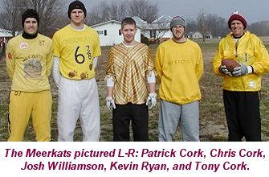 The Meerkats took over and were blitzed heavily by Greg Howard. Tony Cork scrambled for short yardage twice, but the Meerkats were faced with another 4th and 7. Tony again looked for Patrick on 4th down, but Reggie Truitt jumped the route and picked off the pass at midfield giving the Hartebeests great field position once again. They would drive all the way down to the 2-yard line where they were faced with a 4th and goal situation. Willy Truitt was running low on time in the pocket, but found Ryan Tomlinson coming across the front of the endzone to give the H-Beests a 14-0 advantage. With the Meerkats desperate for a score, they looked for their top target
on 1st down. Tony Cork pushed the ball deep down the right sideline where
Patrick Cork made a great catch despite blanket coverage from Reggie Truitt.
As Cork came down with the ball, Truitt rolled over him and Patrick appeared
to injure his left shoulder on the play with 10 1/2 minutes left in the
1st quarter. After a 5-minute delay, Cork returned to the huddle with the
Meerkats deep in Hartebeest territory. "I knew I was hurt when it first
happened," commented Patrick. "But I had no idea how bad it really
was. I figured I had jammed my shoulder because it felt really tight like
a charlie horse, and I couldn't lift my arm more than an inch or two. But
I wasn't going to leave the game for what I thought was a bruised shoulder,
so I just stayed in and did what I could." It was later found out that
Cork had suffered a 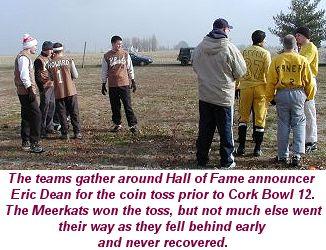 As the Hartebeests took over on their own 3 yard line, Willy looked deep
down the field on first down where Jeff Henney had gotten behind coverage.
Henney bobbled the ball several times before hauling it in for the score,
and the Hartebeests had vaulted into the lead at 21-0. With Patrick unable
to lift his left arm, he decided to get under center and quarterback. "I
hadn't thrown a pass in Cork Bowl since 1996," added Patrick. "But
I couldn't really do much damage 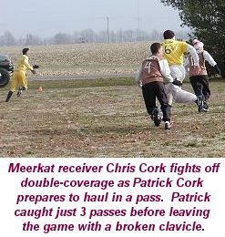 Truitt was 7-for-11 in the first quarter with 3 touchdowns. Tony Cork
was just 2-for-8 and Patrick was 3-for-3 with the team's only score. The
Hartebeests started the second quarter with the ball and after picking up
a first down, found themselves with a 3rd and goal at the 10 yard line.
Willy Truitt thought he had an open receiver and fired a pass into the endzone,
but Greg Howard didn't see the ball immediately and the ball ricocheted
off of Howard's face high into the air. Reggie Truitt made a great break
on the ball and made a sensational diving catch off the deflection in the
endzone for yet another Hartebeest touchdown and a 28-7 lead. "That
was just another play that went their way early," added Patrick. "We
had clawed our way back within 14, and then that play happened and we kind
of deflated again." On the ensuing possession, Patrick was at quarterback
again, but this time couldn't find anyone open and the Meerkats had to punt
after three incomplete passes. "When Patrick went to QB, they dropped
all five men in coverage," added Chris Cork. "Coach and Kevin
didn't have the speed to get away from their defenders, and they were doubling
me and Josh. Without Patrick running routes, we didn't have anyone that
had a good matchup on their defenders. We can usually count on him to either
get open on his own or draw two defenders with him. Their team speed was
a huge factor, and our fastest player was playing with one arm." 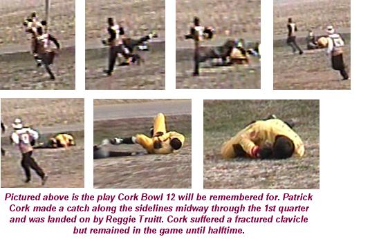 The Hartebeests struggled to keep their offense rolling, and faced a 4th and 10 near midfield. Willy was able to find Henney crossing over the middle for the first down, and then found Reggie open in the corner of the enzone on 3rd and goal to push the lead to 35-7. "Patrick has done a pretty good job on Reggie in the past," commented H-Beest QB Willy Truitt, "but with his shoulder hurting, he couldn't play man-to-man because he couldn't tackle. They tried using Kevin and Coach on Reggie, but he was just too fast for them and we took advantage." Following the score, Tony Cork returned to quarterback for the Meerkats as they hoped Patrick's presence at wideout would help soften the defense. It seemed to work early as Tony completed a first down to pass to Patrick, who hauled it in with his good arm for a 5 yard gain. A short completion to Josh Williamson set up a 3rd and 10. Another short completion, this one to Kevin Ryan, put the ball at midfield and had the Meerkats in another critical 4th down situation. Tony found Chris Cork for the first down and the Meerkats were moving the ball again as they completed 4 straight passes to 4 different receivers. On 2nd and goal, Tony found Chris in the corner of the endzone, but Chris was out of bounds as he caught the pass. On the next play, Tony found Williamson in the right corner of the endzone on a beautiful fade route for his first touchdown pass of the game with just 6 minutes to go in the half and the lead was down to 35-14. Again the Hartebeests struck back as Willy completed three straight passes
and found Henney for another touchdown to push the lead to 42-14. Tony Cork
nearly had another touchdown on the next drive as Kevin Ryan got behind
Willy Truitt down the right sideline, but Willy closed late on the ball
and was able to jump and just tip it away on what would have been a sure
touchdown. "All of those close plays that we needed to get back in
the game went against us," added Chris Cork. "Reggie's deflection
touchdown catch, Willy getting a fingertip on that pass...A couple inches
either way, and who knows?" The incompletion forced the Meerkats to
punt again, and Willy found Henney deep on a 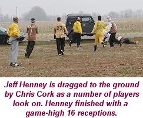 On the first play for the Hartebeests, Reggie Truitt got open behind
the Meerkats' beaten up secondary once again and Willy found him wide open
in the endzone for a 56-21 advantage. Kevin Ryan took a turn under center
for the Meerkats, hoping to be able to stand in the pocket if the Hartebeests
decided to rush. However the experiment backfired as Ryan was intercepted
once again by Reggie Truitt on his first pass. The Hartebeests threw three
straight incompletions and were faced with a 4th and 8 with just 17 seconds
to go in the half, but Willy found Henney for a first down to the 3 yard
line with 9 seconds left, and Willy was able to avoid the rush and scamper
into the endzone for a score to extend the lead to 63-21 with 2 seconds
to go in the half. Patrick Cork went under center again for the final play
of the half and heaved a hail mary in the direction of Chris Cork. The ball
hung in the air near the goal line and was picked off yet again by Reggie
Truitt who initially thought of taking a knee, but decided to run it back.
Truitt broke a number of tackles and fought into the endzone for a touchdown
as time expired and the Hartebeests suddenly led 70-21. The Hartebeests
were able to put 21 points on the board in the final 43 seconds. On the
final play, Patrick bumped his shoulder trying to bring down Truitt and
would 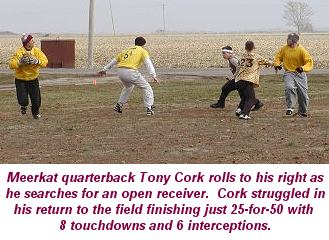 At the half, Willy Truitt had only completed 18 passes on 30 attempts, however 8 of them had gone for touchdowns with 4 of them going to Reggie Truitt who caught 7 passes in the half. Jeff Henney tallied 9 catches and 3 scores in the half, while Ryan Tomlinson had 2 catches and Greg Howard had zero. For the Meerkats, Tony Cork was just 7-for-19 with 1 touchdown and 1 interception and Patrick Cork was 4-for-8 with 2 touchdowns and a pick. He also had 3 catches in the half, while Chris Cork had 4 catches and 2 scores. "Their offense was ok, but it was definitely nothing to write home about," remarked Patrick. "They got most of their scores on long touchdown plays, but never really sustained a drive. The biggest part of the game was how well Reggie was playing defense." Truitt picked off 3 passes in the first half, with all 3 leading to Hartebeest touchdowns. "There is no doubt the reason they got that big lead was because of Reggie Truitt," remarked announcer Eric Dean. "He made big play after big play and that interception return for a touchdown to end the half pretty much sealed the game." With Patrick out for the rest of the game, the Meerkats added Robinson
High School cross country runner Robert Trimble to their roster for the
3rd quarter, but the game seemed to be missing that fire it had before.
"Without Patrick out there, we were just kind of going through the
motions," responded Willy Truitt. "It was really hard to play
the 2nd half," added Greg Howard. "I mean, Patrick IS Cork Bowl
and without him out there it just didn't seem right. But the game needed
to be finished, so we kept going." On the opening drive of the 2nd
half, Tony Cork found Chris Cork on a fade into the endzone for Chris's
third score of the game and the lead was 70-28. Again the Hartebe 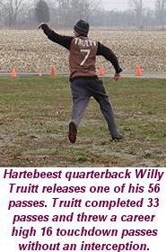 With the outcome quite obvious, the 4th quarter provided the opportunity
for a couple of players to reach some career milestones. After the teams
traded touchdowns (the Meerkats' scores came from Kevin Ryan and Chris Cork
and the Hartebeests scored on passes to Henney and Tomlinson), Reggie Truitt
made a great break on a long pass and picked off yet another pass. Truitt's
5th interception of the game set a new Cork Bowl record that had stood since
Cork Bowl 6 when Chad 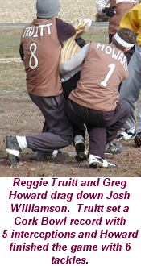 On the next Hartebeest possession, Josh Williamson extended his career lead in sacks as he shot into the backfield and drug down Willy Truitt in the endzone for a safety. The sack was Williamson's 4th of his career. However, the Meerkats couldn't capitalize on the safety as Tony Cork's 3rd down pass was thrown right to Jeff Henney who walked the 5 yards into the endzone. After another Henney interception on the next play, Willy Truitt found Henney in the endzone for a touchdown that pushed the lead to 119-58, but the bigger news was that it was Willy's 100th career touchdown pass. "I came into the game knowing I needed 14 TD's to get to 100," added Truitt. "I also knew if I got to 100 then our team would have a great chance to win." No other player has more than 47 touchdown passes. The Meerkats would score again as Chris Cork hauled in a long crossing
pattern with 4 minutes to go, but the Hartebeests continued to be in attack
mode as they ran a hook-and-lateral on the next drive. Reggie Truitt caught
the pass and pitched it to Henney who weaved in and out of the decimated
Meerkat defense for another score. On the Meerkats last possession, some
more Cork Bowl history was made as Tony Cork completed a pass to Lyndell
Wright who had subbed in for Trimble in the 4th quarter. The catch was the
first of Wright's career and To 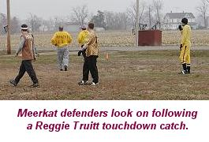 For the second consecutive year, a player not leading his team in receptions
was named Most Valuable Player showing it's more important what kind of
impact a player has than on his numbers. Reggie Truitt was awarded the MVP
trophy for the first time in his long career, finishing with 12 receptions
and a career-high 5 touchdowns on offense, but made his biggest impact on
defense with 8 tackles and 5 interceptions - with one returned for a score.
"Reggie made the big plays early that gave them the lead," replied
Tony Cork. "His catch off the deflection for a touchdown was huge and
his interception return at the end of the half put the game away. Really
the game was decided in the first half, and Reggie was obviously the b 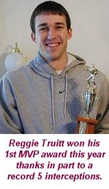 Willy Truitt had another solid day throwing the ball, but finished with his lowest number of completions since he starting playing full-time at quarterback with only 33 completions on 56 attempts. However, nearly half of those completions went for touchdowns as he finished with 16 scores, and most importantly 0 interceptions for the first time in his career. He also added his 13th career rushing touchdown in the game. However, the victory was not on the top of Willy's list of wins. "It was kind of an empty win without Patrick out there," added Truitt. "It was nothing for us to brag about for next year that's for sure." The most impressive stat line came from last year's rookie sensation Jeff Henney as he finished with 16 receptions and a record-tying 8 receiving touchdowns (he also had a touchdown on a lateral). Some Henney supporters would argue that he should have been named MVP, however, much of Henney's production came late in the contest with the outcome decided. Four of his touchdowns came in the 4th quarter, including two in the final two minutes of the game. He also finished with 8 tackles and 2 interceptions - both coming in the 4th quarter as well. "There's no doubt that Jeff played a great game," answered announcer Eric Dean. "But a lot of his numbers came after the game had been decided. That's not a knock on him, but it was obvious that Reggie did it all when it mattered most, and Henney was kind of the leader of the clean-up crew as the game concluded. Both played great, but Reggie's impact had a greater effect on the outcome." Very silent in the game were Hartebeest receivers Greg Howard and Ryan
Tomlinson. Howard had vowed to get back on track, but dropped a number of
passes in the first half and Willy never really looked for him in the 2nd
half as Greg finished with a career low 2 catches and no touchdowns. Tomlinson
finished the game with 3 receptions and 2 touchdowns. Defensively, both
played solid games as Howard had 6 tackles and Tomlinson contributed well
with 5 tackles. 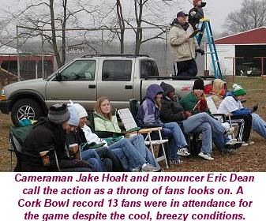 For the Meerkats, Tony Cork finished just 25-for-50 with 8 touchdowns and 6 interceptions. Cork had previously only thrown 2 interceptions in 108 attempts, and had trouble making accurate throws when pressured. "He just didn't get much zip on the passes when he had to roll," added Patrick. "He missed a number of open receivers too, but you can expect that with him not playing in four years. Once we got behind he had to force some throws into coverage to try to make big plays, and that led to some interceptions late." Patrick Cork was 4-for-8 throwing the ball with a pair of touchdowns as well. Chris Cork, the only established receiver after Patrick was injured, played a phenomenal game being double teamed much of the game. Cork finished with 13 catches and 6 touchdowns, his best output since a 13 catch, 7 touchdown game in Cork Bowl 8. Chris also was the most effective blocker when he wasn't catching passes. "He never gave up no matter what the score was," remarked Tony Cork. "He kept battling and really had nothing left in the 4th quarter." Josh Williamson had 5 catches and scored once (and had another score on a lateral), and Kevin Ryan also hauled in 5 passes and scored 2 touchdowns. Patrick Cork had just 3 catches in the game, by far the lowest output of his career. However, he found a silver lining. "Hey, I caught the same number of passes as Tomlinson did and I caught more than Greg," remarked Patrick. "I didn't play half the game, and had only one arm for 35 of the 50 minutes I did play. That's not too shabby I guess. I'm just proud of the way the guys fought after I got hurt. Everyone knew they would have to do something they didn't feel comfortable doing, but they never gave up. They kept fighting until the game was over. They made Cork Bowl proud." Turnovers were once again the key stat in the game. The Hartebeests didn't turn the ball over all afternoon, while the Meerkats tied a Cork Bowl record by throwing 8 interceptions in the game. They didn't set the record for turnovers, as the Rovers turned the ball over 10 times in Cork Bowl 7. Hall of Fame announcer Eric Dean adds his insight into the game:
With so much promise and excitement heading into the game, everyone was without a doubt a little disappointed. However, there was bound to be a blowout sometime, and after having 6 consecutive very close games, a lopsided contest was overdue. Of course it took an injury to cause it, so it will be interesting to see how the league rebounds from this. Amazingly, in the 12 year history of the game, this is the first documented injury. As many remember, Brian Garrard was injured 10 years ago in Cork Bowl 2, and left the game with a chipped tooth. However, the league never received evidence that Garrard was hurt. The whole incident remains a mystery. Congratulations to the Hartebeests and to the Meerkats for playing hard despite the score. Next year's rosters will be announced in late August or early September for Cork Bowl 13. |